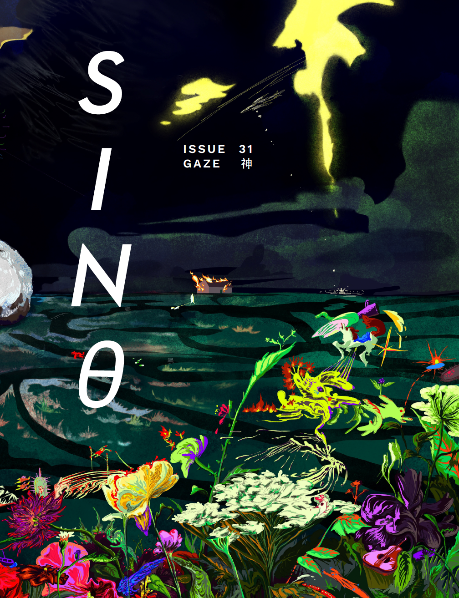

ORDER SINθ #31 NOW
A slice of sky reflected in a puddle, transforming it into a mirror or a portal. What do you see? When you look out, what looks back? Illuminate the hidden, invisible, illusionary, kaleidoscopic. Hold a shining night in your palm forever. sinθ #31 “GAZE 神” offers work that refracts, dilates, captures a moment with a flash. Featuring a Sine Theta ambigram specially designed by Web Content Assistant Noah Hrung.
- Caroline Ju’s oil paintings tackle the homespace, while Zijing Chen’s art explores symbolism and absurdity.
- Liliane Wang’s works feature glazed stoneware and collage, inspired by the sea and its movement.
- Poems by Tiffany Wu address romance intertwined with futurity, surveillance, and cross-cultural identity.
- Qiang Meng champions mundanity in a father’s life in “The Gift” and reflects on nostalgia and displacement in “Childhood”.
- Dingzhong Ding walks us through a poetic duet, one half focused on the impact of absence, the other building upon the sacrifices of others.
- Elena Zhang’s short story “I saw a ghoul stumble towards our house on Halloween” discusses a narrator’s fear of a loved one morphing into a stranger.
- Junior Editor Eli Hsieh speaks with singer-songwriter Sofya Wang on how her queer identity shapes and influences her music in lyrics and composition.
- Staff Contributor Chi S. converses with author Rachel Khong on how her second book, New Americans, weaves together matters of scientific progress and classism.
- In another profile, Chi S. and violinist Laure Chan talk about Chan’s musical background and aspirations and the thrill of watching her perform live.
- Staff Contributor Miki Wong speaks with Shye Y’ng about chance encounters with creatives and the future of Kaula Lumpur’s art scene.
- For this issue’s Student Spotlight, Junior Designer Louisa Sugiman talks with Dongfang Zhao on usage of utilitarian elements in their abstract and figurative paintings.
Front cover by Zijing Chen.